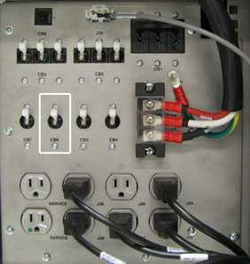
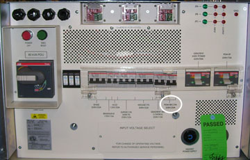
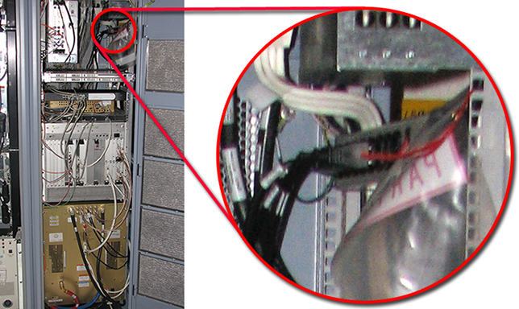
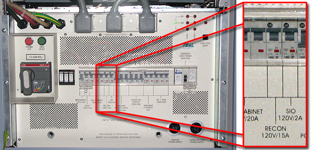

Operating Documentation
Direction 5670006, Rev# 1
Discovery MR750w GEM Service Methods
Module Version 4.0, Version Date 5/17/10
Operating Documentation |
| Required Persons | Preliminary Reqs | Procedure | Finalization |
|---|---|---|---|
| 1 | Not Applicable | 30 mins | 5 mins |
Prior to performing service and/or maintenance work on the Reconstruction (RECON) Subsystem electronics, a lockout/tagout (LOTO) authorized GE Field Engineer (FE) must perform the steps in the LOTO procedure. Completing all steps in this procedure ensures a safe environment when working on these parts.
The following items are subsystem components affected by the RECON LOTO:
CAM Chassis in PGR Cabinet
Terminal Server
Gigabit Ethernet Switch
(For Pre-DV Apps) Service Outlet on Power Distribution Module (PDM)
(For DV Apps) Service Power Strip
Image Compute Node(s)
Table 1: Type, Location, and Magnitude of Energy Undergoing LOTO
| ENERGY SOURCE | Y | N | LOCATION OF ENERGY ISOLATING MEANS | MAGNITUDE OF ENERGY |
|---|---|---|---|---|
| Electrical | x | Power, Gradient, RF Cabinet (PGR), Power Distribution Unit (PDU) | 208 VAC | |
| Pneumatic | x | |||
| Hydraulic | x | |||
| Gas/Water/Steam | x | |||
| Chemical | x | |||
| Mechanical Motion | x | |||
| Gravity | x | |||
| Springs | x | |||
| Thermal | x | |||
| Stored Energy | x | |||
| Air Under Pressure | x | |||
| Oil Under Pressure | x | |||
| Water Under Pressure | x | |||
| Gas Under Pressure | x | |||
| Other | x |
| Item | Qty | Effectivity | Part# | Manufacturer | |
|---|---|---|---|---|---|
| Brass Master Lock Personal Lock | 1 | - | 46-194427P320 | - | |
| Red LOTO Personal Lock Wrap | 1 | - | 2393068 | - | |
| Multi-Locking Device (if multiple service people are involved) | 1 | - | 46-194427P313 | - | |
| Red Warning LOTO Tag | 1 | - | 46-194427P322 | - | |
| Digital Multimeter (DMM) for reading voltage | 1 | - | 46-194427P284 | - | |
| ||||
| electrocution hazard! | ||||
| High voltage present. | ||||
| user proper lock out/tag out procedures before service and/or maintenance. |
| ||||
| Follow the ICN On/Off Procedure to remove power to the ICN Chassis. Failure to properly power down ICNs may result in premature ICN failure. | ||||
| ||||
| Do not turn power off on the ICNs from the power button on the front panel. The ICNs have software running on disk drives that may become corrupted is not shut down properly. | ||||
| Condition | Reference | Effectivity |
|---|---|---|
Affected personnel working in that area must be notified that this LOTO is being performed and/or removed. | - | - |
The procedures in this section apply ONLY to Pre-DV Apps PGRs. For DV Apps PGRs, refer to DV Apps PGR. Pre-DV Apps PGR is equipped with Power Distribution Module (PDM) in upper right of cabinet.
Use DMM to check either Service outlet on PGR PDM for presence of 115 VAC. Circuit Breaker (CB) 6 must be in ON (up) position for power to be present at Service outlet. (Shown below.)
Illustration 1: PGR Cabinet Power Distribution Module

| NOTE: | For switches CB1 through CB8, the UP position indicates the CB is on; the DOWN position indicates that CB is off. |
Perform orderly shutdown of ICNs from VRE Power Control. See Section 4.2 in the ICN On/Off Procedure.
| NOTE: | On a 32-channel system, this shuts down both ICNs. |
At the front panel of the PDU, switch the PDM -RECON circuit breaker to the OFF (down) position. (Shown below.)
Illustration 2: PDM-RECON Circuit Breaker on PDU

At the front panel of the PDU covering the circuit breakers, apply a personal LOTO device for each FE working on the equipment. (Shown below.)
Illustration 3: PDU LOTO Device

Confirm that the power is OFF. Verify Zero Energy by a) Checking the service outlet on the PGR PDM for 115 VAC power with the DMM or b) Manually trying to reenergize the system. If the power is still on, confirm that the PDM_RECON CB on the PDU is in the OFF position.
Prepare for reenergizing the equipment. Notify affected personnel working in the area that the LOTO is being removed.
Remove the personal LOTO device(s) from the front panel of the PDU.
At the front panel of the PDU, switch the PDM-RECON circuit breaker switch to the ON position.
The procedures in this section apply ONLY to DV Apps PGRs. For Pre-DV Apps PGRs, refer to Pre-DV Apps PGR. DV Apps PGR does not contain PDM. Terminal strip installed in place of PDM.
Use DMM to check unused outlet on terminal strip for presence of 115 VAC.
Illustration 4: Service Power Strip

Perform orderly shutdown of ICNs from VRE Power Control. See Section 4.2 in the ICN On/Off Procedure.
At the front panel of the PDU, switch the RECON circuit breaker to the OFF (down) position.
Illustration 5: RECON Circuit Breaker on PDU

At the front panel of the PDU covering the circuit breakers, apply a personal LOTO device for each FE working on the equipment.
Illustration 6: PDU LOTO Device
Confirm that the power is OFF. Check the service power strip for 115 VAC power with the DMM. If the power is still ON, confirm that the RECON CB on the PDU is in the OFF position.
Prepare for reenergizing the equipment. Notify affected personnel working in the area that the LOTO is being removed.
Remove the personal LOTO device(s) from the front panel of the PDU.
At the front panel of the PDU, switch the RECON circuit breaker switch to the ON position.
In the Common Service Desktop, navigate to Utilities → Toolbox → VRE → Power Control.
Click [POWER ON ICN] for the respective ICN. The ICN will automatically be powered-on.
| NOTE: | If this is a 32-channel system, power-on both ICN 1 and ICN 2. |